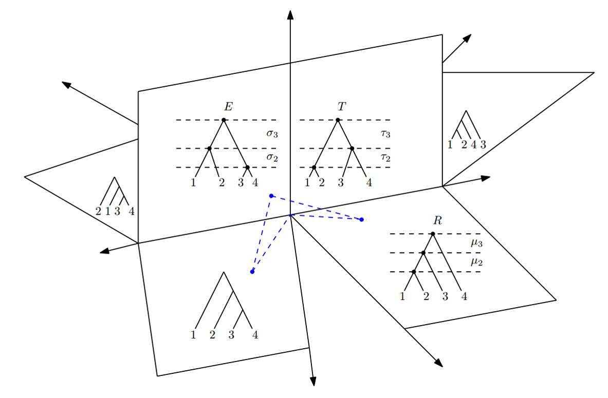
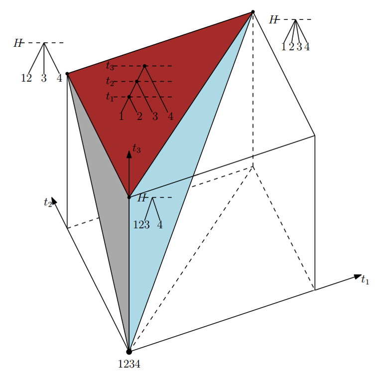
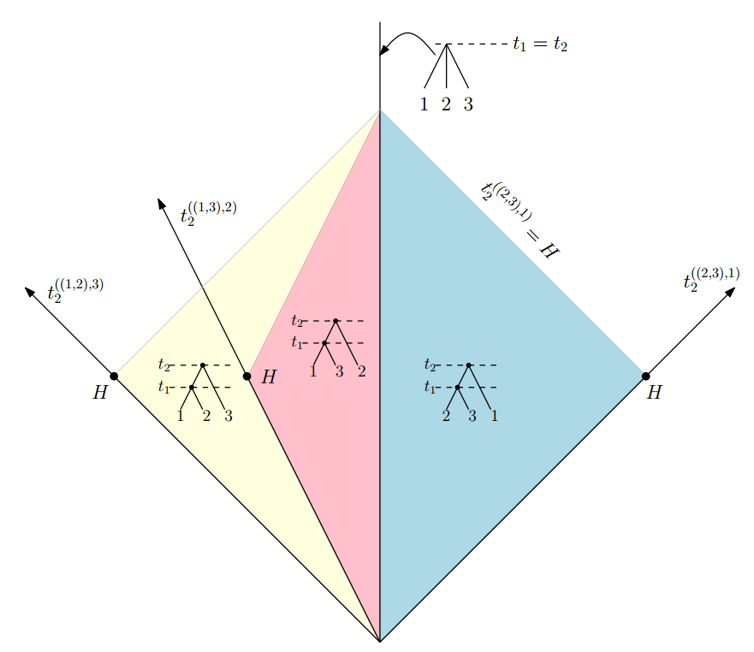

Searching for consensus among time trees
Lars Berling and Alex Gavryushkin

February 11, 2021
Akaroa
tau-space
Geodesic in time-tree space
- Gavryushkin, Alex, and Alexei J. Drummond. "The space of ultrametric phylogenetic trees." Journal of Theoretical Biology 403 (2016): 197-208.
- Gavryushkin, Alex, and Alexei Drummond. tauGeodesic. Mar. 2015. doi: 10.5281/zenodo.47152. https://github.com/gavruskin/tauGeodesic

- Gavryushkina, Alexandra, Tracy A. Heath, Daniel T. Ksepka, Tanja Stadler, David Welch, and Alexei J. Drummond. "Bayesian total-evidence dating reveals the recent crown radiation of penguins." Systematic Biology 66.1 (2016): 57-73.
- Gavryushkin, Alex, and Alexei Drummond. tauGeodesic. Mar. 2015. doi: 10.5281/zenodo.47152. https://github.com/gavruskin/tauGeodesic

t-space: simplex
t-space: 2D
t-space: 3D

These all fundamentally rely on the $\ell_2$ norm.
Why not $\ell_1$?
Discrete time tree

Sampled ancestor tree

Discrete time tree space ($\rho = 1$)
Sampled ancestor tree space